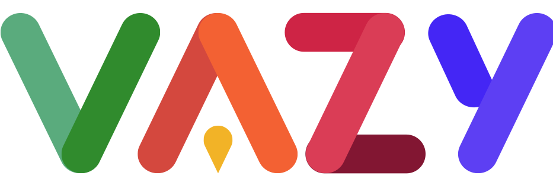

Propulsé par VAZYUn rapprochement stratégique avec VAZY, entreprise villeurbannaise engagée auprès des collectivités, pour déployer la transparence publique sur tout le territoire français.
VAZY — Solutions numériques pour les territoires
Entreprise villeurbannaise • vazy.app
Des collectivités utilisent déjà Open Projets au quotidien.
Villeurbanne
Bilan & réalisations
Anciennement GrandsProjets, Open Projets transforme des données techniques en un récit clair, accessible et valorisant pour les collectivités.
Une cartographie publique qui relie chaque chantier à une stratégie globale du territoire.
Une interface intuitive qui démocratise l'accès à l'information locale pour tous les citoyens.
Chaque chantier devient une étape visible d'un projet de territoire, réduisant tensions et sollicitations.
Ce que change Open Projets au quotidien pour les collectivités.
| Domaine | Sans Open Projets | Avec Open Projets |
|---|---|---|
| Données | Éparpillées en silos, opacité entre services | Centralisation et pilotage unifié |
| Citoyens | Réclamations, tensions, incompréhension | Transparence en temps réel |
| Élus | Projets invisibles, action mal comprise | Valorisation continue du mandat |
| Agents | Saturés de demandes répétitives | Autonomie citoyenne, moins de sollicitations |
Exemple : un citoyen trouve en 10 secondes la réponse à « qu'est-ce qu'ils font devant ma salle de sport ? » — c'est un courriel de moins pour le cabinet du Maire et 20 min économisées pour un agent.
GrandsProjets est né d'une initiative citoyenne à Lyon. Pour passer de l'expérimentation locale à un déploiement national, il fallait une structure solide.
Open Projets a prouvé sa valeur avec des retours enthousiastes d'élus, d'institutions et de citoyens. Mais pour répondre à la demande croissante, un cadre professionnel était nécessaire.
VAZY est une entreprise villeurbannaise, engagée, qui travaille déjà au quotidien avec des collectivités territoriales. Ce rapprochement offre à Open Projets :
Un cercle vertueux qui bénéficie à tous : collectivités, citoyens et écosystème.
Toutes les collectivités de France pourront accéder à Open Projets : communes, métropoles, intercommunalités.
Une structure solide assure la continuité du service, la maintenance et les évolutions à long terme.
Plus de développeurs, de designers et de spécialistes pour faire évoluer la plateforme.
Une structure adaptée aux procédures d'achat public, facilitant l'adoption par les collectivités.
Accompagnement dédié, formation, support technique et garantie de niveau de service.
Synergies avec les autres solutions VAZY pour une expérience complète.
L'ADN du projet est préservé. Le rapprochement apporte une dimension supplémentaire.
Ce rapprochement ouvre la voie à de nouvelles thématiques pour les territoires.
Impliquer les habitants dans les décisions qui façonnent leur territoire. Créer un lien direct entre élus et citoyens.
Cartographier les zones à risque, les aménagements en cours et les projets de mobilité douce pour des territoires plus sûrs.
Rendre visibles les engagements environnementaux des collectivités : végétalisation, pistes cyclables, rénovation énergétique…
Transformez la perception des travaux sur votre territoire. Passez d'une communication subie à une transparence proactive.